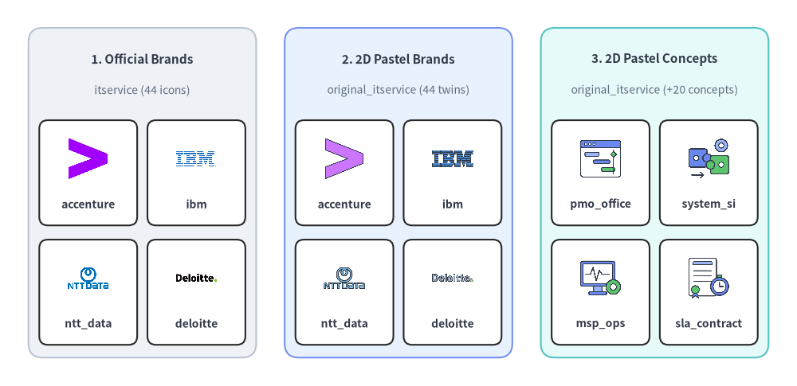
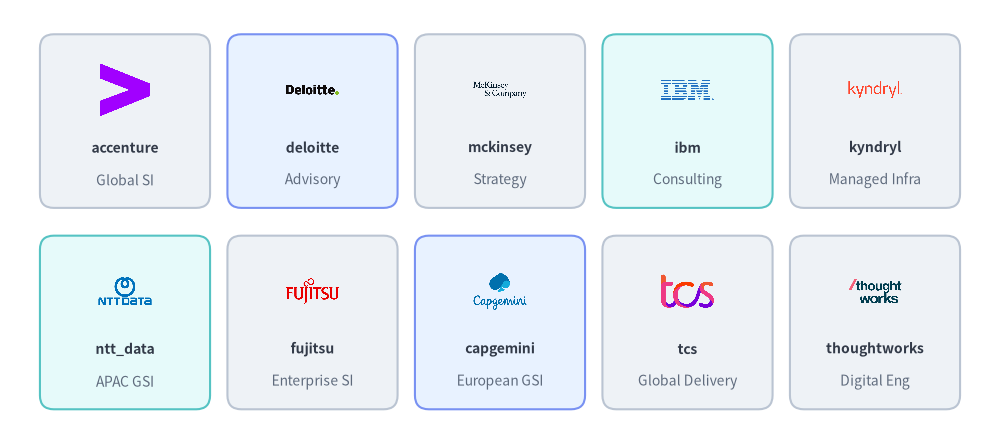
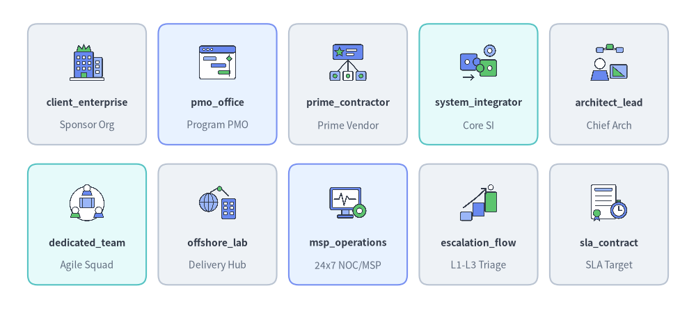
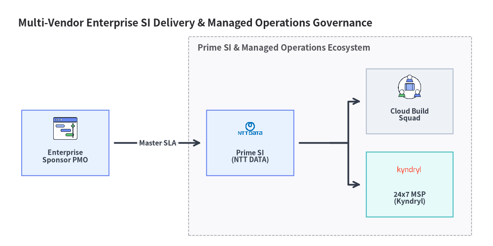

IT サービス・コンサルティングアイコン (itservice & original_itservice)
Drawlib は、drawlib.icons.itservice（ItserviceIcon）に 44 種の公式コンサルティング・システムインテグレータブランドアイコンを、drawlib.icons.original_itservice（OriginalItserviceIcon）に 64 種のフラット 2D パステルアイコン（全 44 種のブランドツイン＋20 種のベンダー中立な ITSM・デリバリ・ガバナンスコンセプトアイコン）を提供しています。ティア間の使い分けについてはアイコン概要を、マルチパートナートポロジ図についてはアーキテクチャ図を参照してください。

Source Code
from drawlib.canvas import save, setup
from drawlib.icons import itservice, original_itservice
from drawlib.shapes import rectangle
from drawlib.styles import Styles
from drawlib.text import text
setup(width=140, height=68)
columns = [
(
25.0,
"1. Official Brands",
"itservice (44 icons)",
Styles.Neutral,
[
("accenture", itservice.accenture),
("ibm", itservice.ibm),
("ntt_data", itservice.ntt_data),
("deloitte", itservice.deloitte),
],
),
(
70.0,
"2. 2D Pastel Brands",
"original_itservice (44 twins)",
Styles.PrimaryNeutral,
[
("accenture", original_itservice.accenture),
("ibm", original_itservice.ibm),
("ntt_data", original_itservice.ntt_data),
("deloitte", original_itservice.deloitte),
],
),
(
115.0,
"3. 2D Pastel Concepts",
"original_itservice (+20 concepts)",
Styles.SecondaryNeutral,
[
("pmo_office", original_itservice.pmo_office),
("system_si", original_itservice.system_integrator),
("msp_ops", original_itservice.msp_operations),
("sla_contract", original_itservice.sla_contract),
],
),
]
for cx, title, subtitle, card_style, items in columns:
rectangle((cx, 34.0), width=40.0, height=58.0, style=card_style.patch(shape_r=2.5))
text((cx, 57.5), title, style=Styles.DarkBold.patch(text_size=11.0))
text((cx, 52.0), subtitle, style=Styles.Muted.patch(text_size=10.0))
offsets = [(-9.5, 37.5), (9.5, 37.5), (-9.5, 16.5), (9.5, 16.5)]
sub_style = Styles.White.patch(shape_r=1.5, line_width=0.6)
for (dx, iy), (lbl, fn) in zip(offsets, items, strict=True):
ix = cx + dx
rectangle((ix, iy), width=17.2, height=18.5, style=sub_style)
fn((ix, iy + 2.5), width=8.0, style=Styles.Primary)
text((ix, iy - 5.5), lbl, style=Styles.DarkBold.patch(text_size=10.0))
save()
1. API シグネチャとツインモジュール構成
itservice と original_itservice は、エンタープライズプログラムのガバナンス、マルチベンダーシステムインテグレーション（SI）、マネージドサービスプロバイダ（MSP）運用、およびエスカレーション体制向けに設計されたツインアイコンペアを構成しています。
| モジュール | ダイアグラム Enum | 正規アイコン数 | アセットアーカイブ | 主な視覚的用途 |
|---|---|---|---|---|
drawlib.icons.itservice |
ItserviceIcon |
44 | icon_itservice |
グローバルコンサルティングファーム、Big Four アドバイザリ、システムインテグレータ（Accenture、IBM、Deloitte、NTT DATA、TCS、Kyndryl など）の公式ブランドロゴ。 |
drawlib.icons.original_itservice |
OriginalItserviceIcon |
64（ブランドツイン 44 種 + コンセプト 20 種） |
icon_original_itservice |
全 44 コンサルティング／SI ブランドの統一されたフラット 2D パステル版に加え、20 種のベンダー中立なガバナンス・デリバリコンセプト（pmo_office、system_integrator、msp_operations、sla_contract など）を収録。 |
すべてのアイコン関数は 1:1 の正方形アスペクト比で中心座標 xy=(cx, cy) を基準に配置され、Style 属性（alpha、angle、image_tint_color、image_border_*）を受け取ります。
from drawlib.diagrams.architecture import ItserviceIcon, Node, OriginalItserviceIcon
from drawlib.icons import itservice, original_itservice
from drawlib.styles import Styles
# 1. Direct canvas rendering (center-anchored at (cx, cy))
itservice.accenture((30, 25), width=9.0, style=Styles.Primary)
original_itservice.accenture((60, 25), width=9.0, style=Styles.Primary)
original_itservice.pmo_office((90, 25), width=9.0, style=Styles.Primary)
# 2. High-level ArchitectureDiagram nodes via Enum tokens
si_node = Node("Prime SI", width=26, height=18, icon=ItserviceIcon.NTT_DATA, icon_size=7.5)
msp_node = Node("24x7 MSP", width=26, height=18, icon=OriginalItserviceIcon.MSP_OPERATIONS, icon_size=7.5)
2. 公式・パステルブランドアイコン一覧とリファレンス (itservice & original_itservice)
以下に示す 44 種の正規ブランド名は、drawlib.icons.itservice.<name>（ItserviceIcon.<NAME>）と drawlib.icons.original_itservice.<name>（OriginalItserviceIcon.<NAME>）の両方で同一名称として利用できます。

Source Code
from drawlib.canvas import save, setup
from drawlib.icons import itservice
from drawlib.shapes import rectangle
from drawlib.styles import Styles
from drawlib.text import text
setup(width=144, height=64)
row1 = [
("accenture", "Global SI", itservice.accenture, Styles.Neutral),
("deloitte", "Advisory", itservice.deloitte, Styles.PrimaryNeutral),
("mckinsey", "Strategy", itservice.mckinsey, Styles.Neutral),
("ibm", "Consulting", itservice.ibm, Styles.SecondaryNeutral),
("kyndryl", "Managed Infra", itservice.kyndryl, Styles.Neutral),
]
row2 = [
("ntt_data", "APAC GSI", itservice.ntt_data, Styles.SecondaryNeutral),
("fujitsu", "Enterprise SI", itservice.fujitsu, Styles.Neutral),
("capgemini", "European GSI", itservice.capgemini, Styles.PrimaryNeutral),
("tcs", "Global Delivery", itservice.tcs, Styles.Neutral),
("thoughtworks", "Digital Eng", itservice.thoughtworks, Styles.Neutral),
]
for row_idx, items in enumerate([row1, row2]):
cy = 46.5 if row_idx == 0 else 17.5
for col_idx, (name, cat, icon_fn, card_st) in enumerate(items):
cx = 18.0 + col_idx * 27.0
rectangle((cx, cy), width=24.5, height=25.0, style=card_st.patch(shape_r=2))
icon_fn((cx, cy + 4.5), width=8.5, style=Styles.Primary)
text((cx, cy - 3.8), name, style=Styles.DarkBold.patch(text_size=10.0))
text((cx, cy - 8.5), cat, style=Styles.Muted.patch(text_size=10.0))
save()
ブランドアイコン全 44 種一覧 (itservice & original_itservice)
| カテゴリ | 数 | 正規関数名 (itservice.* & original_itservice.*) |
Enum メンバー (ItserviceIcon.* & OriginalItserviceIcon.*) |
|---|---|---|---|
| 戦略コンサルティング・Big Four アドバイザリ | 9 | accenture, bain, bcg, booz_allen, deloitte, ey, kpmg, mckinsey, pwc |
ACCENTURE, BAIN, BCG, BOOZ_ALLEN, DELOITTE, EY, KPMG, MCKINSEY, PWC |
| グローバル SIer・マネージドインフラ | 12 | atos, capgemini, cgi, dxc, ibm, indra, kyndryl, leidos, rackspace, sopra_steria, t_systems, tietoevry |
ATOS, CAPGEMINI, CGI, DXC, IBM, INDRA, KYNDRYL, LEIDOS, RACKSPACE, SOPRA_STERIA, T_SYSTEMS, TIETOEVRY |
| 国内・APAC システムインテグレータ | 5 | fujitsu, hitachi, nec, nri, ntt_data |
FUJITSU, HITACHI, NEC, NRI, NTT_DATA |
| グローバルデリバリ・IT サービス | 7 | cognizant, hcltech, infosys, ltimindtree, tcs, tech_mahindra, wipro |
COGNIZANT, HCLTECH, INFOSYS, LTIMINDTREE, TCS, TECH_MAHINDRA, WIPRO |
| デジタルエンジニアリング・クラウドネイティブ支援 | 5 | endava, epam, globant, slalom, thoughtworks |
ENDAVA, EPAM, GLOBANT, SLALOM, THOUGHTWORKS |
| BPO・カスタマーオペレーション・IT 人材支援 | 6 | adecco, concentrix, genpact, manpower, randstad, teksystems |
ADECCO, CONCENTRIX, GENPACT, MANPOWER, RANDSTAD, TEKSYSTEMS |
3. ベンダー中立コンセプトアイコン一覧とリファレンス (original_itservice)
上記の 44 種のブランドツインに加え、drawlib.icons.original_itservice（OriginalItserviceIcon）には 20 種のベンダー中立な ITSM・コンサルティング・プログラムガバナンスコンセプトアイコンが収録されており、RACI マトリクス、マルチベンダー推進体制図、SLA エスカレーションフローに活用できます。

Source Code
from drawlib.canvas import save, setup
from drawlib.icons import original_itservice
from drawlib.shapes import rectangle
from drawlib.styles import Styles
from drawlib.text import text
setup(width=144, height=64)
row1 = [
("client_enterprise", "Sponsor Org", original_itservice.client_enterprise, Styles.Neutral),
("pmo_office", "Program PMO", original_itservice.pmo_office, Styles.PrimaryNeutral),
("prime_contractor", "Prime Vendor", original_itservice.prime_contractor, Styles.Neutral),
("system_integrator", "Core SI", original_itservice.system_integrator, Styles.SecondaryNeutral),
("architect_lead", "Chief Arch", original_itservice.architect_lead, Styles.Neutral),
]
row2 = [
("dedicated_team", "Agile Squad", original_itservice.dedicated_team, Styles.SecondaryNeutral),
("offshore_lab", "Delivery Hub", original_itservice.offshore_lab, Styles.Neutral),
("msp_operations", "24x7 NOC/MSP", original_itservice.msp_operations, Styles.PrimaryNeutral),
("escalation_flow", "L1-L3 Triage", original_itservice.escalation_flow, Styles.Neutral),
("sla_contract", "SLA Target", original_itservice.sla_contract, Styles.Neutral),
]
for row_idx, items in enumerate([row1, row2]):
cy = 46.5 if row_idx == 0 else 17.5
for col_idx, (name, cat, icon_fn, card_st) in enumerate(items):
cx = 18.0 + col_idx * 27.0
rectangle((cx, cy), width=24.5, height=25.0, style=card_st.patch(shape_r=2))
icon_fn((cx, cy + 4.5), width=8.5, style=Styles.Primary)
text((cx, cy - 3.8), name, style=Styles.DarkBold.patch(text_size=10.0))
text((cx, cy - 8.5), cat, style=Styles.Muted.patch(text_size=10.0))
save()
ベンダー中立コンセプトアイコン全 20 種一覧 (original_itservice)
正規関数名 (original_itservice.*) |
Enum メンバー (OriginalItserviceIcon.*) |
ガバナンス・デリバリ区分 | 主なアーキテクチャ上の役割 |
|---|---|---|---|
architect_lead |
ARCHITECT_LEAD |
技術リーダーシップ | プリンシパル／エンタープライズアーキテクト、設計責任者、技術レビュー委員会 |
bpo_center |
BPO_CENTER |
マネージド運用 | ビジネスプロセスアウトソーシング（BPO）バックオフィス・シェアードサービスセンター |
client_enterprise |
CLIENT_ENTERPRISE |
ステークホルダー・発注元 | 発注元エンタープライズ企業、事業オーナー、エグゼクティブスポンサー |
dedicated_team |
DEDICATED_TEAM |
デリバリ体制 | 専任プロダクト開発ポッドまたはクロスファンクショナルなアジャイルスクワッド |
escalation_flow |
ESCALATION_FLOW |
ITSM・運用 | L1 → L2 → L3 の段階的インシデントエスカレーションおよび重大障害対策本部 |
it_consulting |
IT_CONSULTING |
戦略・アドバイザリ | IT 戦略立案、クラウド移行アセスメント、アドバイザリ支援 |
joint_venture |
JOINT_VENTURE |
契約・事業スキーム | 共同出資の合弁事業体（JV）または戦略的アライアンス推進組織 |
msp_operations |
MSP_OPERATIONS |
マネージド運用 | マネージドサービスプロバイダ（MSP）による 24 時間 365 日 SRE・パッチ適用・手順書運用 |
offshore_lab |
OFFSHORE_LAB |
デリバリ体制 | グローバルデリバリセンター（GDC）、ニアショア／オフショア開発ラボ |
org_hierarchy |
ORG_HIERARCHY |
ガバナンス | レポーティングライン、部門ツリー、組織オペレーティングモデル |
pmo_office |
PMO_OFFICE |
ガバナンス | マイルストーン・予算・リスクを統括するプログラムマネジメントオフィス（PMO） |
prime_contractor |
PRIME_CONTRACTOR |
契約・事業スキーム | エンドツーエンドのプログラム完遂に責任を持つ元請け（プライム）ベンダー |
project_manager |
PROJECT_MANAGER |
デリバリリーダーシップ | エンゲージメントマネージャ、スクラムマスタ、デリバリリード |
raci_matrix |
RACI_MATRIX |
ガバナンス | 実行責任・説明責任・協業・報告（RACI）の役割分担マトリクス |
ses_engineer |
SES_ENGINEER |
技術者支援・準委任 | 常駐スペシャリストまたは組込み型エンジニア（SES／技術支援） |
sla_contract |
SLA_CONTRACT |
契約・ITSM | サービス品質保証（SLA）、稼働率コミットメント、OLA 責任分界点 |
staff_augmentation |
STAFF_AUGMENTATION |
技術者支援・体制拡充 | 社内開発チームに柔軟に統合される専門エンジニア増強体制 |
steering_committee |
STEERING_COMMITTEE |
ガバナンス | エグゼクティブ・ステアリングコミッティおよび四半期プログラム推進会議 |
support_operator |
SUPPORT_OPERATOR |
ITSM・運用 | L1/L2 サービスデスクオペレータ、NOC アナリスト、一次障害対応担当 |
system_integrator |
SYSTEM_INTEGRATOR |
デリバリ体制 | マルチベンダー基盤構築を統括するシステムインテグレータ（SIer） |
4. 実践的なアーキテクチャ図 (ArchitectureDiagram)
以下の例では、ArchitectureDiagram 内で OriginalItserviceIcon と ItserviceIcon を組み合わせ、エンタープライズ向けマルチベンダー SI 推進体制とマネージド運用ガバナンス構成を図解しています。
from drawlib.canvas import clear, save, setup
from drawlib.diagrams.architecture import (
ArchitectureDiagram,
ItserviceIcon,
Node,
NodeGroup,
OriginalItserviceIcon,
)
from drawlib.styles import Styles
clear()
setup(width=136, height=68)
d = ArchitectureDiagram(
node_style=Styles.Primary,
node_text_style=Styles.DarkBold.patch(text_size=10.0),
edge_style=Styles.DarkBold,
edge_text_style=Styles.DarkBold.patch(text_size=10.0),
node_card_style=Styles.Neutral,
title="Multi-Vendor Enterprise SI Delivery & Managed Operations Governance",
)
sponsor = d.add(
Node(
"Enterprise\nSponsor PMO",
width=24,
height=18,
icon=OriginalItserviceIcon.PMO_OFFICE,
icon_size=7.5,
card_style=Styles.PrimaryNeutral,
),
xy=(14.0, 24.5),
)
delivery = d.add(
NodeGroup(title="Prime SI & Managed Operations Ecosystem", padding=5.0),
xy=(48.0, 4.0),
)
prime = delivery.add(
Node(
"Prime SI\n(NTT DATA)",
width=24,
height=18,
icon=ItserviceIcon.NTT_DATA,
icon_size=7.5,
card_style=Styles.PrimaryNeutral,
),
xy=(17.0, 20.5),
)
build_pod = delivery.add(
Node(
"Cloud Build\nSquad",
width=24,
height=18,
icon=OriginalItserviceIcon.DEDICATED_TEAM,
icon_size=7.5,
),
xy=(61.0, 32.0),
)
msp_ops = delivery.add(
Node(
"24x7 MSP\n(Kyndryl)",
width=24,
height=18,
icon=ItserviceIcon.KYNDRYL,
icon_size=7.5,
card_style=Styles.SecondaryNeutral,
),
xy=(61.0, 9.0),
)
d.connect(sponsor, prime, label="Master SLA", padding=1.5)
prime.fork([build_pod, msp_ops], at_x=87.0, padding=1.5)
d.draw(xy=(4.0, 4.0))
save()
